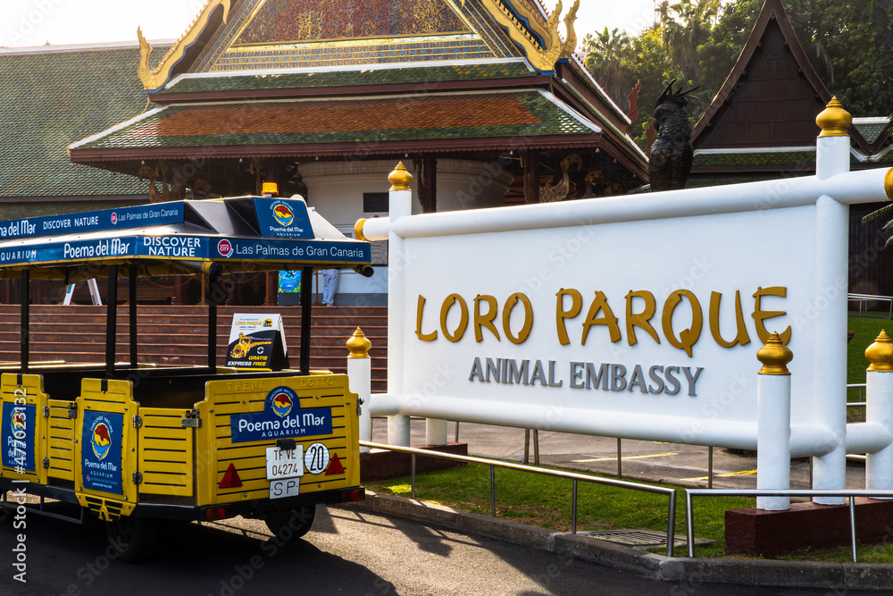
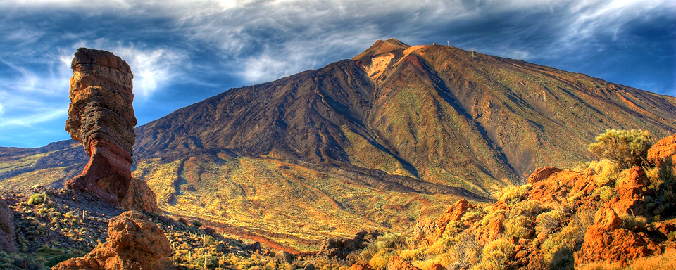

Atracciones principales en Tenerife
En Tenerife puedes disfrutar de una amplia gama de actividades, estas son las principales atracciones visitadas

Loro Parque
Loro Parque es un zoológico y una colección de plantas tropicales de propiedad privada, situado en el Puerto de la Cruz.

Siam Park
Siam Park es un parque acuático situado en Costa Adeje. Fue nombrado por los usuarios de TripAdvisor como el mejor parque acuático del mundo entre los años 2014 y 2023.

Volcán Teide
El Teide es un volcán situado en la isla española de Tenerife, en el archipiélago de Canarias. Cuenta con una altitud oficial de 3715 metros sobre el nivel del mar y 7500 metros sobre el lecho marino.
Parque Nacional del Teide
El parque nacional del Teide es un espacio natural protegido español situado en la isla de Tenerife, Canarias. Fue declarado el 22 de enero de 1954 como parque nacional.Es el mayor y más antiguo de los parques nacionales de Canarias y el tercero más antiguo de España
Monkey Park
Monkey Park Tenerife es un pequeño zoológico ubicado cerca del gran núcleo turístico de Los Cristianos, en el sur de la isla de Tenerife. Es el único de las Islas Canarias especializado en monos y tiene la particularidad de que se puede entrar en las jaulas para tocar a los animales y alimentarlos.
Jardín Botánico
El Jardín de Aclimatación de La Orotava, también llamado Jardín Botánico de Puerto de la Cruz, o normalmente como El Botánico, es un jardín botánico situado en Puerto de la Cruz, en la isla de Tenerife.
Playa del Duque
Playa concurrida donde bañarse y tomar el sol, con restaurantes, alojamientos y mirador.
Barranco del Infiero
El Barranco del Infierno, nombre que adopta por su carácter abrupto, es un Espacio Natural Protegido ubicado en el municipio de Adeje, en el suroeste de Tenerife.
Lago Martiánez
El Lago Martiánez es un complejo de ocio situado en el Puerto de la Cruz. Se trata de un complejo de unos 100 000 metros cuadrados, formado por un lago central artificial con un conjunto de piscinas, jardines, terrazas, restaurantes, etc. con el protagonismo de la piedra volcánica.